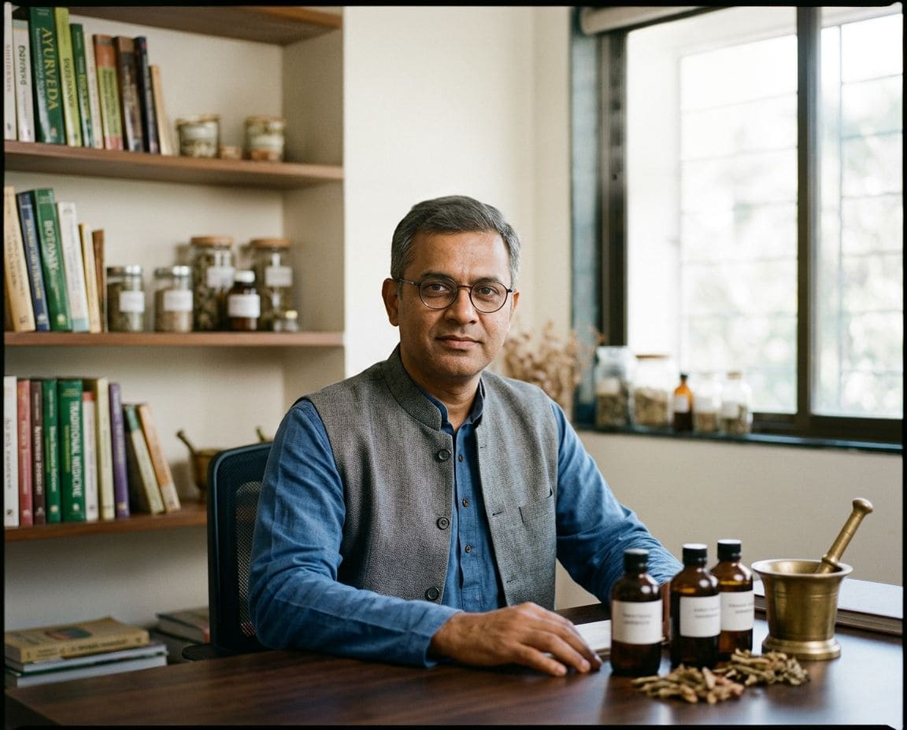
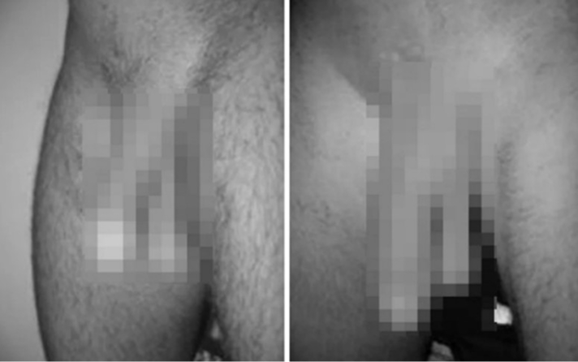
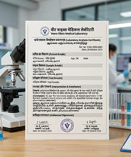

ट्रेंडिंग: 40 साल बाद पुरुषों का स्वास्थ्य
प्रोस्टेट, शक्ति, आत्मविश्वास: भारतीय प्राकृतिक परिसर जिसके बारे में देश भर के पुरुष बात कर रहे हैं

प्रोस्टेट, जननांग प्रणाली और पुरुष शक्ति के प्राकृतिक समर्थन के लिए पारंपरिक भारतीय जड़ी-बूटियों पर आधारित एक प्राकृतिक परिसर. हम उन पुरुषों की कहानी, रचना और समीक्षाएँ बताते हैं जो पहले ही कोशिश कर चुके हैं।
और अधिक जानकारी प्राप्त करेंराजेश कुमार द्वारा पोस्ट किया गया · आयुर्वेद चिकित्सक ·
राजेश कुमार
पारंपरिक आयुर्वेद के विशेषज्ञ जी. केरल
नमस्ते! मेरा नाम राजेश हे. 20 से अधिक वर्षों से, मैं पुरुषों के स्वास्थ्य के लिए पारंपरिक भारतीय दृष्टिकोण का अध्ययन कर रहा हूं और उन पुरुषों के साथ संवाद कर रहा हूं जो प्रोस्टेट सूजन, घटी हुई शक्ति और अन्य नाजुक समस्याओं का सामना कर रहे हैं।. इस लेख में मैं व्यक्तिगत अनुभव और टिप्पणियाँ साझा करता हूँ - यह कोई चिकित्सीय अनुशंसा नहीं है, बल्कि एक व्यक्तिगत राय है।
सामग्री केवल सूचनात्मक उद्देश्यों के लिए है और चिकित्सा सलाह का स्थान नहीं लेती है।

प्रोस्टेटाइटिस क्या है?
कामकाज के लिए जिम्मेदार है।. तीव्र या जीर्ण हो सकता है
- अक्सर टेस्टोस्टेरोन के स्तर में कमी के साथ जुड़ा हुआ है
- कामेच्छा, वजन और मांसपेशियों को प्रभावित करता है
- केवल एक डॉक्टर ही रक्त परीक्षण का उपयोग करके सटीक कारण निर्धारित कर सकता है
आँकड़े क्या बताते हैं
55%+
40 से अधिक उम्र के पुरुषों को प्रोस्टेट संबंधी समस्याओं का अनुभव होता है
3 में से 1
लक्षण वाले पुरुष मूत्र रोग विशेषज्ञ के पास जाना स्थगित कर देते हैं
20-25
वर्ष - वह उम्र जब कुछ पुरुष पहले से ही पहले लक्षणों का अनुभव करते हैं
यह इतने सारे पुरुषों को क्यों प्रभावित करता है?
प्रोस्टेटाइटिस 30 वर्ष से अधिक उम्र के पुरुषों में सबसे आम मूत्र संबंधी रोगों में से एक है, और 20-25 वर्ष की आयु के पुरुष तेजी से इसका सामना कर रहे हैं।. यहां ध्यान देने योग्य मुख्य लक्षण दिए गए हैं:
● दर्द और परेशानी
- – पेट के निचले हिस्से, मूलाधार या कमर में खींचने या काटने का दर्द
● यौन क्रिया
- – कामेच्छा में कमी
- – इरेक्शन की गुणवत्ता और अवधि में गिरावट
● सामान्य स्वास्थ्य
- – थकान और चिड़चिड़ापन बढ़ना
● मूत्र संबंधी विकार
- - बार-बार पेशाब आना, जलन होना
- – मूत्राशय के अधूरा खाली होने का अहसास होना
- - पेशाब करते समय धारा कमजोर होना
● स्खलन
- – शीघ्रपतन या इसे प्राप्त करने में कठिनाई

यदि आपको ये लक्षण दिखाई देते हैं, तो सटीक निदान के लिए मूत्र रोग विशेषज्ञ से संपर्क करें।
प्रमुख मुद्दों के बारे में और पढ़ें

शक्ति
- कामेच्छा और सेक्स ड्राइव में कमी
- इरेक्शन की अवधि और गुणवत्ता में कमी
- उत्तेजना में कठिनाई
पोटेंसी एक सामान्य शब्द है जो किसी पुरुष की यौन इच्छा, स्तंभन क्षमता और यौन गतिविधि को जोड़ता है. यह हार्मोनल स्तर, रक्त वाहिकाओं और तंत्रिका तंत्र की स्थिति, मनोवैज्ञानिक स्थिति और प्रोस्टेट स्वास्थ्य पर निर्भर करता है. प्रोस्टेट में सूजन संबंधी प्रक्रियाएं इनमें से कई कारकों को एक साथ प्रभावित कर सकती हैं, इसलिए शक्ति संबंधी समस्याएं अक्सर प्रोस्टेटाइटिस के साथ होती हैं।
टेस्टोस्टेरोन
- यौन इच्छा और कामेच्छा में कमी
- मूत्र पथ की शिथिलता
- वजन बढ़ना और मांसपेशियों का कम होना
- थकान बढ़ना
टेस्टोस्टेरोन के स्तर में कमी उम्र बढ़ने वाले पुरुष शरीर की मुख्य विशेषताओं में से एक है, और कभी-कभी एक गंभीर विकार का संकेत है. टेस्टोस्टेरोन की कमी से यौन इच्छा और कामेच्छा में कमी, मूत्र पथ की समस्याएं, साथ ही वजन बढ़ना और मांसपेशियों की हानि हो सकती है. टेस्टोस्टेरोन का सटीक स्तर केवल रक्त परीक्षण के परिणामों से ही निर्धारित किया जा सकता है।

स्तंभन दोष
- शीघ्रपतन या इसे प्राप्त करने में कठिनाई
- अस्थिर या अपर्याप्त निर्माण
- अंतरंग जीवन से जुड़ी बढ़ी चिंता
इरेक्टाइल डिसफंक्शन संभोग के लिए पर्याप्त इरेक्शन प्राप्त करने या बनाए रखने में लगातार होने वाली कठिनाई है. कारण शारीरिक हो सकते हैं (प्रोस्टेट सूजन, टेस्टोस्टेरोन में कमी, संवहनी स्थिति) और मनोवैज्ञानिक (तनाव, चिंता). अक्सर ये कारक एक-दूसरे को मजबूत करते हैं: शारीरिक असुविधा चिंता का कारण बनती है, और चिंता, बदले में, लक्षणों को खराब कर देती है।
यदि उपचार न किया गया तो क्या होगा?
निदान और उपचार के बिना, प्रोस्टेटाइटिस अक्सर पुराना हो जाता है, और लक्षण बार-बार वापस आते हैं।
- पुरानी सूजन और बार-बार तेज होना
- दर्द बढ़ गया, जीवन की गुणवत्ता कम हो गई
- प्रोस्टेट एडेनोमा का संभावित विकास
- स्तंभन क्रिया और कामेच्छा पर संभावित प्रभाव
उपचार हमेशा की तरह
एक आदमी असुविधा या मूत्र संबंधी विकारों की शिकायत के लिए मूत्र रोग विशेषज्ञ से परामर्श लेता है.
डॉक्टर एक परीक्षा आयोजित करता है और सटीक निदान करने के लिए आवश्यक परीक्षण निर्धारित करता है।
परीक्षा परिणामों के आधार पर, उपचार निर्धारित किया जाता है: तीव्र लक्षणों के लिए दवाएं, और, यदि आवश्यक हो, भौतिक चिकित्सा
उपचार का कोर्स पूरी तरह से और डॉक्टर द्वारा बताए अनुसार पूरा किया जाना चाहिए - अन्यथा लक्षण वापस आ सकते हैं।
डॉक्टर द्वारा निर्धारित बुनियादी उपचार के साथ-साथ, कई पुरुष सामान्य जननांग सहायता के लिए प्राकृतिक उपचार पर भी विचार करते हैं।. नीचे वह कहानी और उत्पाद है जिसके बारे में वर्तमान में बात की जा रही है.
पारंपरिक उपचार की सीमाएँ
तीव्र लक्षणों के लिए दवाएं हमेशा जल्दी काम नहीं करती हैं और कभी-कभी लंबे समय तक लेने पर दुष्प्रभाव भी पैदा करती हैं।
यही कारण है कि कई पुरुष अतिरिक्त प्राकृतिक सहायता की तलाश में रहते हैं - चिकित्सा उपचार के साथ-साथ, इसके बजाय नहीं।
- पाचन विकार
- रक्तचाप पर प्रभाव
- आक्रामक प्रक्रियाओं के दौरान असुविधा
मेरा व्यक्तिगत अनुभव
दुर्भाग्य से, मैं प्रोस्टेटाइटिस के बारे में प्रत्यक्ष रूप से जानता हूं. कई साल पहले, जैसे-जैसे मेरी उम्र बढ़ती गई, मुझे ऊर्जा के स्तर में कमी और प्रोस्टेट की सूजन के अनुरूप असुविधा दिखाई देने लगी।. इसने मुझे पुरुषों के स्वास्थ्य का समर्थन करने वाली पारंपरिक भारतीय प्रथाओं का अधिक गहराई से अध्ययन करने के लिए प्रेरित किया, जिनका उपयोग मेरे दादाजी द्वारा किया जाता था।

पारिवारिक रिकॉर्ड पर शोध करके और केरल में आयुर्वेद विशेषज्ञों से बात करके, मैंने पारंपरिक रूप से प्रोस्टेट और समग्र पुरुष स्वर का समर्थन करने के लिए उपयोग की जाने वाली जड़ी-बूटियों का मिश्रण संकलित किया है।. इस प्रकार VEERA VIBES प्रकट हुआ - प्राकृतिक अर्क पर आधारित एक कॉम्प्लेक्स, जिसे आज निर्माता की आधिकारिक वेबसाइट . पर ऑर्डर किया जा सकता है।
यह लेखक की निजी कहानी और राय है.. व्यक्तिगत परिणाम अलग-अलग हो सकते हैं
वीरा वाइब्स: दृष्टिकोण कैसे भिन्न है
वीरा वाइब्स एक आहार अनुपूरक है, यह कोई दवा नहीं है और इसका उद्देश्य किसी भी बीमारी का निदान, इलाज या रोकथाम करना नहीं है।. उपयोग से पहले डॉक्टर से परामर्श करने की सलाह दी जाती है. उपयोग का परिणाम व्यक्तिगत है.
वीरा वाइब्स में क्या है?
सॉ पाल्मेटो (सॉ पाल्मेटो)
परंपरागत रूप से प्रोस्टेट फ़ंक्शन का समर्थन करने के लिए उपयोग किया जाता है
बिछुआ अर्क
मूत्र प्रणाली का समर्थन
जिंक और सेलेनियम
प्रजनन प्रणाली के सामान्य कामकाज को बनाए रखने में भाग लें
कद्दू के बीज का अर्क
पादप स्टेरोल्स का स्रोत
अश्वगंधा
पारंपरिक आयुर्वेदिक पौधा, सामान्य स्वर के लिए उपयोग किया जाता है
संपूर्ण संरचना, खुराक और उपयोग की विधि के लिए, पैकेजिंग और निर्माता की आधिकारिक वेबसाइट देखें।

प्रमाण पत्र और प्रयोगशाला रिपोर्ट
उत्पाद ने गुणवत्ता नियंत्रण पास कर लिया है. अनुरोध पर दस्तावेज़ उपलब्ध हैं.

अनुरूप प्रमाण पत्र

प्रयोगशाला निष्कर्ष

जीएमपी गुणवत्ता प्रमाणपत्र
जानें आज का खास ऑफर

50% छूट के साथ वीरा वाइब्स ऑर्डर करें

पुरानी कीमत: ₹1,850
प्रोमोशनल कीमत: ₹3,700
पूरे भारत में कूरियर द्वारा डिलीवरी. प्राप्ति पर भुगतान. मल्टी-पैक ऑर्डर करने पर अतिरिक्त 7.5% छूट और ₹300 तक का उपहार
वीडियो समीक्षाएँ
अधिक वीडियो देखने के लिए स्क्रॉल करें
पाठक टिप्पणियाँ

अर्जुन · मुंबई
2 घंटे पहले
लेख के लिए धन्यवाद, बहुत रोचक! मैंने प्रमोशन पर पहले ही वीरा वाइब्स का ऑर्डर दे दिया है, मैं कोर्स आज़माऊंगा।

संजय · चेन्नई
3 घंटे पहले
मुझे 10 वर्षों से अधिक समय से क्रोनिक प्रोस्टेटाइटिस है. डॉक्टर ने पुष्टि की कि इसका उपयोग मुख्य उपचार के अतिरिक्त के रूप में किया जा सकता है - यह आसान हो गया है।

लक्ष्मी · हैदराबाद
5 घंटे पहले
मेरे पति मुझसे 15 साल बड़े हैं, मैं चाहती हूं कि वह अधिक आत्मविश्वासी महसूस करें. मुझे उम्मीद है कि डॉक्टर ने पहले ही जो सलाह दी है, उसके अतिरिक्त यह कोर्स मदद करेगा।
प्रिया · दिल्ली
2 घंटे पहले
भारतीय जड़ी-बूटियाँ वास्तव में प्रभावशाली हैं. जैसे ही मैंने साक्षात्कार देखा, मैंने तुरंत इसे अपने पति के लिए ऑर्डर कर दिया
रोहित · पुणे
4 घंटे पहले
जानकारी के लिए आभार! ऑर्डर लगभग 10 दिनों में आ गया, सब कुछ बड़े करीने से पैक किया गया था।

दीपक अहमदाबाद
6 घंटे पहले
यह पहली बार नहीं है जब मैं ऑर्डर कर रहा हूं, मैं प्रमोशन पर नजर रखता हूं और डिस्काउंट पर दोबारा कोर्स करता हूं।
विक्रम · बेंगलुरु
3 घंटे पहल
मैं एक मूत्र रोग विशेषज्ञ से इलाज के साथ-साथ एक महीने से कोर्स कर रहा हूं. मैं काफ़ी बेहतर महसूस कर रहा हूं, लगभग कोई असुविधा नहीं बची है

अनिल · जयपुर
6 घंटे पहले
मैं उपरोक्त टिप्पणियों से सहमत हूं - अच्छी, उच्च गुणवत्ता वाली रचना.
पाठक समीक्षाएँ. व्यक्तिगत परिणाम अलग-अलग हो सकते हैं